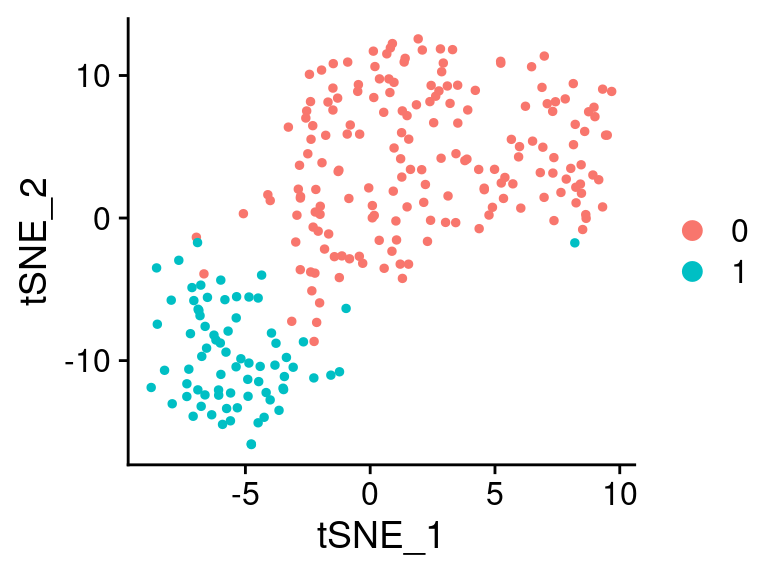
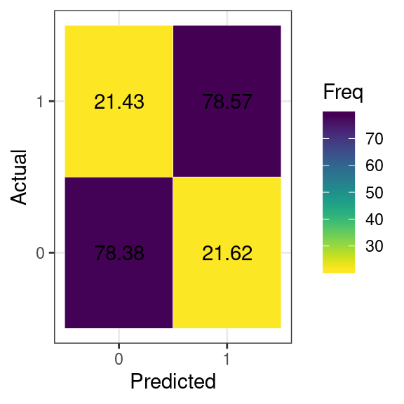
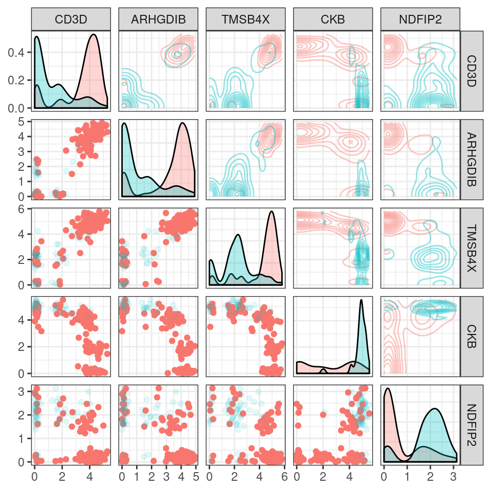
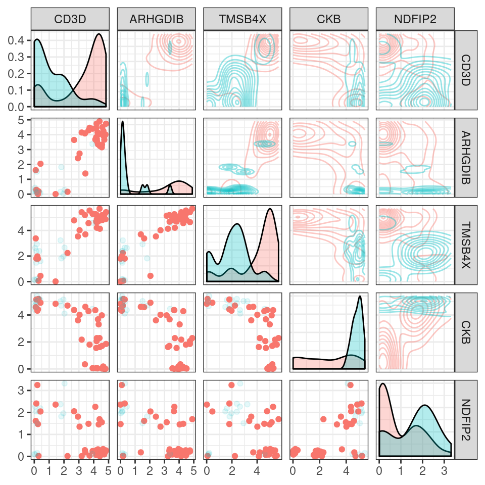
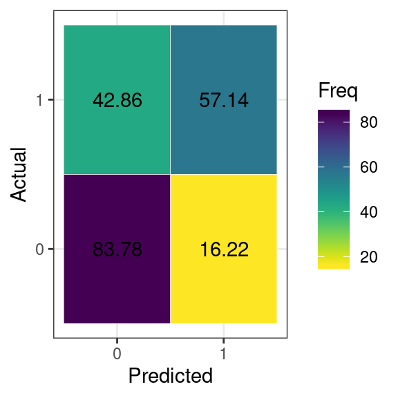
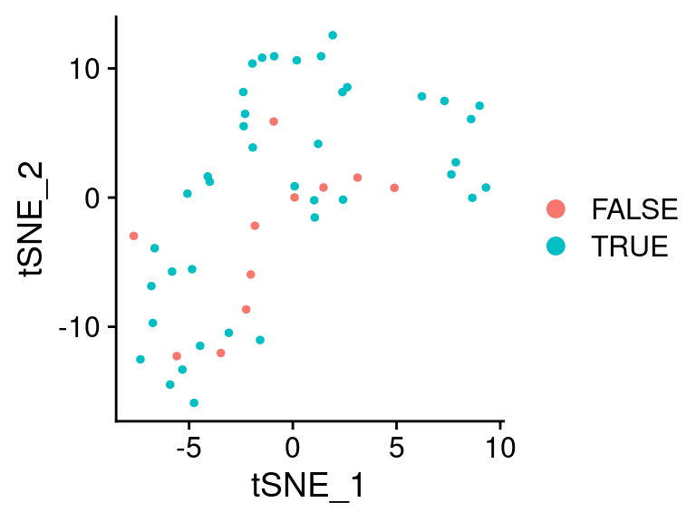

Evaluating Tree Quality
evaluating_tree_quality.Rmdlibrary(sctree)
#> Loading required package: Seurat
#> Registered S3 method overwritten by 'GGally':
#> method from
#> +.gg ggplot2
#>
#> Attaching package: 'sctree'
#> The following objects are masked from 'package:Seurat':
#>
#> FindAllMarkers, FindConservedMarkers, FindMarkersTesting the quality of the generated classifiers has three main parts.
- Splitting the data that wants to be classified in two.
- Use one of the splits to train the classifier.
- Use the model on the rest of the data and check the accuracy.
To illustrate the process, we will use this tiny dataset that comes bundled with our package. Additional information can be obtained by using ?small_5050_mix

Splitting the dataset
There are several ways in which this can be done, here we will sample 80% of the cells for the training, this will be don using Seurat’s subset interface.
# Here we get the names of all cells
all_cells <- Cells(small_5050_mix)
# Here we get what number of cells would be 80%
num_cells_train <- round(0.8*length(all_cells))
num_cells_train
#> [1] 204Sample will select 204 cell names and store those names in cells_train, we will also store all other names in cells_test.
cells_train <- sample(all_cells, num_cells_train)
cells_test <- all_cells[!all_cells %in% cells_train]Now using the subset operation, we get two Seurat objects containing each of the correspoinding cells.
training_mix <- subset(small_5050_mix, cells = cells_train)
testing_mix <- subset(small_5050_mix, cells = cells_test)
training_mix
#> An object of class Seurat
#> 1031 features across 204 samples within 1 assay
#> Active assay: RNA (1031 features)
#> 2 dimensional reductions calculated: pca, tsne
testing_mix
#> An object of class Seurat
#> 1031 features across 51 samples within 1 assay
#> Active assay: RNA (1031 features)
#> 2 dimensional reductions calculated: pca, tsneTrainning the classifier
Once the training subset has been defined, we can proceed to generate our classification tree using fit_ctree
tree_model <- fit_ctree(training_mix)
print(as.garnett(tree_model))
#> > 0_node_3 (n = 26)
#> expressed below: CD3D 3.124, HEY1 1.924
#>
#> > 0_node_6 (n = 109)
#> expressed above: CD3D 3.124
#> expressed below: TSC22D3 2.121
#>
#> > 0_node_7 (n = 13)
#> expressed above: CD3D 3.124, TSC22D3 2.121
#>
#> > 1 (n = 56)
#> expressed above: HEY1 1.924
#> expressed below: CD3D 3.124Checking the consistency of the classifier
This model can now be used to generate a prediction on the testing data. For this we will use the predict generic, which requires the new data to be passed as a data.frame.
We can store these predictions in the Seurat object itself for future usage.
predicted_cluster <- predict(
tree_model,
newdata = as.data.frame(testing_mix))
testing_mix[["predicted_cluster"]] <- predicted_cluster
testing_mix[["correctly_classified"]] <- predicted_cluster == Idents(testing_mix)Furthermore, we can generate a confusion matrix based on the classifications by passing the data onto table.
confusion_tbl <- table(
Predicted = predicted_cluster,
Actual = Idents(testing_mix))
confusion_tbl
#> Actual
#> Predicted 0 1
#> 0 29 3
#> 1 8 11
# We can convert these absolute numbers to percentages
as.frequency.matrix(confusion_tbl)
#> Actual
#> Predicted 0 1
#> 0 78.37838 21.42857
#> 1 21.62162 78.57143We can also display graphically this information using autoplot


Tuning the model
I is posible to modify how the model is generated, in this case, we might want to define the markers based on some previous information or some quality metric. Here we will use the top 6 genes according to a random-forest based importance metric.
markers <- FindAllMarkers(
training_mix, test.use = "RangerDE",
only.pos = TRUE,
warn.imp.method = FALSE)
#> Calculating cluster 0
#> Calculating cluster 1
head(markers)
#> importance p_val gene avg_logFC pct.1 pct.2 p_val_adj cluster
#> MZB1 2.2142543 0 MZB1 1.909216 0.832 0.230 0 0
#> CD3D 3.1634060 0 CD3D 1.783060 0.881 0.377 0 0
#> ITGA4 0.6338057 0 ITGA4 1.780135 0.594 0.066 0 0
#> FYB 0.5491506 0 FYB 1.747208 0.741 0.115 0 0
#> CD3G 0.9445293 0 CD3G 1.732194 0.748 0.131 0 0
#> ADA 2.4258305 0 ADA 1.704872 0.930 0.541 0 0
importance_cutoff <- sort(markers$importance, decreasing = TRUE)[6]
top_markers <- markers[markers$importance > importance_cutoff,]
top_markers
#> importance p_val gene avg_logFC pct.1 pct.2 p_val_adj cluster
#> CD3D 3.163406 0 CD3D 1.783060 0.881 0.377 0 0
#> ARHGDIB 3.147184 0 ARHGDIB 1.694954 0.860 0.344 0 0
#> TMSB4X 3.722523 0 TMSB4X 1.632897 0.951 0.820 0 0
#> CKB 8.272143 0 CKB 1.252858 1.000 0.657 0 1
#> NDFIP2 2.865956 0 NDFIP2 1.022000 0.869 0.273 0 1

We can pass to fit_ctree any parameter accepted by ?partykit::ctree_control. Some of the parameters that might affect the most the final tree would be:
-
alpha, which would modify the splitting criteria, values close to 1 indicate that more splits could be considered. -
maxdepth, which specifies how deep can the tree be. -
minbucket, which specifies how many cells can each terminal node have. -
minsplit, specifies how small can a node be to be considered for further splitting.
Please note that more complicated classifiers will usually have better classification performance, but less interpretability. Nontheless, there will be point in which the classifier gets better within the training data but will not improve in the testing data (phenomenom called over-fitting the model).
tree_model_topn <- fit_ctree(
training_mix,
genes_use = top_markers$gene,
alpha = 0.99, minbucket = 2, minsplit = 1)
print(as.garnett(tree_model_topn))
#> > 0_node_14 (n = 4)
#> expressed below: ARHGDIB 0, CD3D 3.124, NDFIP2 0, TMSB4X 0
#> expressed between: CKB 5.142 4.539
#>
#> > 0_node_15 (n = 4)
#> expressed above: TMSB4X 0
#> expressed below: ARHGDIB 0, CD3D 3.124, NDFIP2 0
#> expressed between: CKB 5.142 4.539
#>
#> > 0_node_24 (n = 2)
#> expressed below: CD3D 1.741
#> expressed between: CKB 4.848 4.803, NDFIP2 2.215 0
#>
#> > 0_node_28 (n = 2)
#> expressed above: CKB 4.539
#> expressed below: TMSB4X 0
#> expressed between: CD3D 3.124 1.741, NDFIP2 2.841 0
#>
#> > 0_node_31 (n = 2)
#> expressed above: CKB 5.031, TMSB4X 0
#> expressed between: CD3D 3.124 1.741, NDFIP2 2.841 0
#>
#> > 0_node_32 (n = 5)
#> expressed above: CKB 4.539, NDFIP2 2.841
#> expressed below: CD3D 3.124
#>
#> > 0_node_36 (n = 102)
#> expressed above: CD3D 3.124
#> expressed below: NDFIP2 1.588, TMSB4X 5.7
#>
#> > 0_node_38 (n = 2)
#> expressed above: CD3D 3.124
#> expressed below: TMSB4X 5.7
#> expressed between: NDFIP2 1.63 1.588
#>
#> > 0_node_39 (n = 8)
#> expressed above: CD3D 3.124
#> expressed below: TMSB4X 5.7
#> expressed between: NDFIP2 2.013 1.63
#>
#> > 0_node_40 (n = 2)
#> expressed above: CD3D 3.124, TMSB4X 5.7
#> expressed below: NDFIP2 2.013
#>
#> > 0_node_42 (n = 3)
#> expressed above: CD3D 3.124, NDFIP2 2.013
#> expressed below: CKB 0
#>
#> > 0_node_5 (n = 9)
#> expressed below: CD3D 1.616, CKB 4.539
#>
#> > 0_node_7 (n = 2)
#> expressed below: CKB 4.539
#> expressed between: CD3D 2.07 1.616
#>
#> > 0_node_8 (n = 3)
#> expressed below: CKB 4.539
#> expressed between: CD3D 2.749 2.07
#>
#> > 0_node_9 (n = 2)
#> expressed below: CKB 4.539
#> expressed between: CD3D 3.124 2.749
#>
#> > 1_node_16 (n = 3)
#> expressed above: CKB 5.142
#> expressed below: ARHGDIB 0, CD3D 3.124, NDFIP2 0
#>
#> > 1_node_17 (n = 2)
#> expressed above: ARHGDIB 0, CKB 4.539
#> expressed below: CD3D 3.124, NDFIP2 0
#>
#> > 1_node_22 (n = 8)
#> expressed below: CD3D 1.741
#> expressed between: CKB 4.803 4.539, NDFIP2 2.841 0
#>
#> > 1_node_25 (n = 3)
#> expressed below: CD3D 1.741
#> expressed between: CKB 4.848 4.803, NDFIP2 2.841 2.215
#>
#> > 1_node_26 (n = 27)
#> expressed above: CKB 4.848
#> expressed below: CD3D 1.741
#> expressed between: NDFIP2 2.841 0
#>
#> > 1_node_30 (n = 4)
#> expressed above: TMSB4X 0
#> expressed between: CD3D 3.124 1.741, CKB 5.031 4.539, NDFIP2 2.841 0
#>
#> > 1_node_43 (n = 5)
#> expressed above: CD3D 3.124, CKB 0, NDFIP2 2.013(note how much more complicate the model ends up being …)
topn_predicted_cluster <- predict(
tree_model_topn, newdata = as.data.frame(testing_mix, genes = top_markers$gene))
testing_mix[["topn_predicted_cluster"]] <- topn_predicted_cluster
testing_mix[["topn_correctly_classified"]] <- topn_predicted_cluster ==
Idents(testing_mix)confusion_tbl <- table(
Predicted = topn_predicted_cluster,
Actual = Idents(testing_mix))
autoplot(as.frequency.matrix(confusion_tbl), show_number = TRUE)
